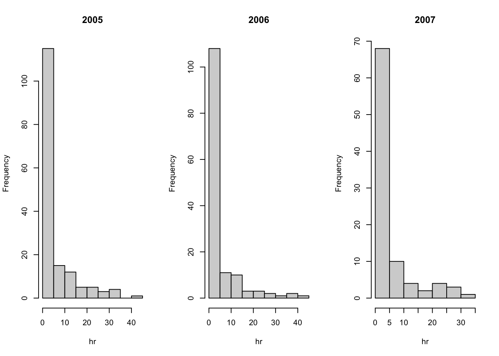

Chapter 14 plyr
14.1 Tidyverse and plyr
For this document you will need to install and load the family the package plyr functions. To install the package refer to Section 8.
The tidyverse is a collection of packages that share a unique underlying philosophy, frame work, and syntax. There are approximately 20 tidyverse packages, but the core ones are ggplot2, dplyr, tidyr, readr, purr, tibble, stringr, and forcats. You can install these packages individually or all at once using by simply using the command install.packages("tidyverse").
We will be focusing on the plyr package for now. The functions and topics that we that we will be covering can be found in Wickham (2011).
14.2 Iteration with plyr
The main focus of the plyr package is to formalize cleaning, and implementing functions to our data sets. In many data sets we have to split the data into the desired subsets, apply a function, and then reformat the data with adjustments. This process appears over and over again. When we apply or implement a function to different components of a data set we typically use an apply method or for loops, Sections 10 and 9 respectively. Often times this can take several lines of code to accomplish.
The plyr package aims to reduce the amount of steps it takes to accomplish these tasks. In general, the functions in the plyr package are considered iteration techniques and are closely related to the apply functions in base R. In some cases, a plyr preforms exactly the same as the apply functions, both in terms of efficiency and in the task accomplished.
Although the plyr package contains similar functions to base R, some users find this plyr functions to be more intuitive. In addition, the plyr functions generally have more features and can simplify code. The techniques in the plyr package are known as the split-apply-combine method. They work to split a data set in the desired way, apply the desired function, and combine and return the desired output to the user all in one step. This philosophy of the plyr functions is inspired by Google’s map-reduce technique of analyzing their data sets.
14.3 Syntax
For the plyr package an array includes the special cases of vectors (1d arrays) and matrices (2d arrays). Arrays are made out of any atomic vector: logical, character, integer, or numeric. A list is a non-atomic array, which is is an array that can contain any type of data structure. A data frame is a 2d array where each column can be a different atomic class.
The functions of the plyr package have the same general structure: ?*ply(). All plyr functions have simple and informative names, the first (?) and second (*) characters describe the input and output data types, respectively. Several inputs and outputs are supported: a = array, d = data frame, l = list, and _ = discarded.
- first character (input type): a, d, l
- second character (output type): a, d, l, _ (nothing)
A table of the 12 core functions is directly below.

Similarly to the apply functions, the functions have two or three main arguments depending on the input.
a*ply(.data, .margins, .fun, ...)d*ply(.data, .variables, .fun, ...)l*ply(.data, .fun, ...)
The first argument .data contains the object that will be split, processed, and recombined. The second argument .variables or .margins describes how to split up the input into pieces. The third argument .fun is the processing function that is to be applied to each piece.
The tidyverse uses function arguments to start with a “.” in order to differentiate the plyr arguments with any arguments to be passed to the processing function (.fun).
In general, the plyr functions have a very similar set up to the apply functions in base R. Recall apply(ARRAY, MARGIN, FUN).
14.4 Inputs
Each input type has various rules for how to split it up.
Arrays are sliced by dimension into lower-dimensional pieces.
Data frames are subsetted by combinations of variables
Each element of a list is separated.
The way each input is split up actually doesn’t depend on the class of the data object, but the method that it responds to. For example, an object split using a*ply() must respond to dim() and accept multidimensional indexing. Thus, you can use a data frame as a data input for a*ply(). For d*ply(), the data must work with split() and must be able to be converted into a list. Hence, many matrix objects can be used as inputs for d*ply(). For l*ply() the data must work with length() and [[ indexing.
14.4.1 Input: a*ply()
For the a*ply() functions we have .margins argument which works the same as the MARGIN argument for apply().
.margins=1: Slice up into rows..margins=2: Slice up into columns..margins=c(1,2): Slice up into individual cells.
## [,1] [,2] [,3] [,4] [,5] [,6] [,7] [,8] [,9] [,10]
## [1,] 1 11 21 31 41 51 61 71 81 91
## [2,] 2 12 22 32 42 52 62 72 82 92
## [3,] 3 13 23 33 43 53 63 73 83 93
## [4,] 4 14 24 34 44 54 64 74 84 94
## [5,] 5 15 25 35 45 55 65 75 85 95
## [6,] 6 16 26 36 46 56 66 76 86 96
## [7,] 7 17 27 37 47 57 67 77 87 97
## [8,] 8 18 28 38 48 58 68 78 88 98
## [9,] 9 19 29 39 49 59 69 79 89 99
## [10,] 10 20 30 40 50 60 70 80 90 100## 1 2 3 4 5 6 7 8 9 10
## 5.5 15.5 25.5 35.5 45.5 55.5 65.5 75.5 85.5 95.514.4.2 Input: d*ply()
When using a data frame we typically want to split the data into groups based on combinations of variables. We can do this using the .variables argument. This argument supports multiple forms of input. We can use a character vector of column names, c("Var1", "Var2") or use .(var1, var2).
For example, to find the number of observations that have the same vs and am in the mtcars data set, we can use the following commands
## am
## vs 0 1
## 0 12 6
## 1 7 7## am
## vs 0 1
## 0 12 6
## 1 7 714.4.3 Input: l*ply()
Lists do not have an additional argument to break up the data. The function is simply applied to each element of the list.
## 1 2 3 4
## [1,] 1 1 1 1
## [2,] 2 2 2 2
## [3,] 3 3 3 3
## [4,] 4 4 4 4
## [5,] 5 5 5 5
## [6,] 6 6 6 6
## [7,] 7 7 7 7
## [8,] 8 8 8 8
## [9,] 9 9 9 9
## [10,] 10 10 10 10## [[1]]
## [1] 1 1 1 1
##
## [[2]]
## [1] 2 2 2 2
##
## [[3]]
## [1] 3 3 3 3
##
## [[4]]
## [1] 4 4 4 4
##
## [[5]]
## [1] 5 5 5 5
##
## [[6]]
## [1] 6 6 6 6
##
## [[7]]
## [1] 7 7 7 7
##
## [[8]]
## [1] 8 8 8 8
##
## [[9]]
## [1] 9 9 9 9
##
## [[10]]
## [1] 10 10 10 1014.5 Outputs
The output type defines how the data is recombined after the processing function, and how the data is labeled.
14.6 Helpers
The plyr package has several different “helper” features that are common for data analysis problems.
arrange: re-order the rows of a data frame by specifying the columns to order bymutate: add new columns or modifying existing columns, liketransform, but new columns can refer to other columns that you just created.summarise: likemutatebut create a new data frame, not preserving any columns in the old data frame.join: an adapation of merge which is more similar to SQL, and has a much faster implementation if you only want to find the first match.colwise: make any function work colwise on a dataframecount: quickly count unique combinations and return return as a data frame.failwith: sets a default value to return if the function throws an error. For example,failwith(NA, f)will return anNAwheneverfthrows an error. Theprogress: allows you to monitor the progress of long running operations. There four different options:“none”, the default, no progress bar is displayed
“text”, provides a textual progress bar.
“win” and “tk” provide graphical progress bars for
14.7 Examples
We will use the baseball data set in the plyr package.
## id year stint team lg g ab r h X2b X3b hr rbi sb cs bb so ibb
## 1 aaronha01 1954 1 ML1 NL 122 468 58 131 27 6 13 69 2 2 28 39 NA
## 2 aaronha01 1955 1 ML1 NL 153 602 105 189 37 9 27 106 3 1 49 61 5
## 3 aaronha01 1956 1 ML1 NL 153 609 106 200 34 14 26 92 2 4 37 54 6
## 4 aaronha01 1957 1 ML1 NL 151 615 118 198 27 6 44 132 1 1 57 58 15
## 5 aaronha01 1958 1 ML1 NL 153 601 109 196 34 4 30 95 4 1 59 49 16
## 6 aaronha01 1959 1 ML1 NL 154 629 116 223 46 7 39 123 8 0 51 54 17
## hbp sh sf gidp cyear
## 1 3 6 4 13 1
## 2 3 7 4 20 2
## 3 2 5 7 21 3
## 4 0 0 3 13 4
## 5 1 0 3 21 5
## 6 4 0 9 19 6What we will explore is the performance of a batter over his career.
Creating New Columns in a Data Set
To get started, we need to calculate the “career year”, i.e. the number of years since the player started playing.
## id year stint team lg g ab r h X2b X3b hr rbi sb cs bb so ibb
## 1 aaronha01 1954 1 ML1 NL 122 468 58 131 27 6 13 69 2 2 28 39 NA
## 2 aaronha01 1955 1 ML1 NL 153 602 105 189 37 9 27 106 3 1 49 61 5
## 3 aaronha01 1956 1 ML1 NL 153 609 106 200 34 14 26 92 2 4 37 54 6
## 4 aaronha01 1957 1 ML1 NL 151 615 118 198 27 6 44 132 1 1 57 58 15
## 5 aaronha01 1958 1 ML1 NL 153 601 109 196 34 4 30 95 4 1 59 49 16
## 6 aaronha01 1959 1 ML1 NL 154 629 116 223 46 7 39 123 8 0 51 54 17
## hbp sh sf gidp cyear
## 1 3 6 4 13 1
## 2 3 7 4 20 2
## 3 2 5 7 21 3
## 4 0 0 3 13 4
## 5 1 0 3 21 5
## 6 4 0 9 19 6Find the number of total home runs for each year, append it to the existing data set.
hr_total_year = ddply(baseball, # Starting data set
"year", # How to break up the data set
transform, # Make a new column to original data set
total.hr = sum(hr)) # New column is the total num of home runs in a year.
head(hr_total_year)## id year stint team lg g ab r h X2b X3b hr rbi sb cs bb so ibb hbp
## 1 ansonca01 1871 1 RC1 25 120 29 39 11 3 0 16 6 2 2 1 NA NA
## 2 forceda01 1871 1 WS3 32 162 45 45 9 4 0 29 8 0 4 0 NA NA
## 3 mathebo01 1871 1 FW1 19 89 15 24 3 1 0 10 2 1 2 0 NA NA
## 4 startjo01 1871 1 NY2 33 161 35 58 5 1 1 34 4 2 3 0 NA NA
## 5 suttoez01 1871 1 CL1 29 128 35 45 3 7 3 23 3 1 1 0 NA NA
## 6 whitede01 1871 1 CL1 29 146 40 47 6 5 1 21 2 2 4 1 NA NA
## sh sf gidp cyear total.hr
## 1 NA NA NA 1 7
## 2 NA NA NA 1 7
## 3 NA NA NA 1 7
## 4 NA NA NA 1 7
## 5 NA NA NA 1 7
## 6 NA NA NA 1 7Add several new columns to a data set with the mutate option.
add_columns = ddply(baseball, # inputted data set
"year", # How to split data
mutate, # Want original data set with (1+) new columns
mu = mean(hr), # New column #1
sigma = sd(hr), # New column #2
cv = sigma/mu) # New column #3
head(add_columns)## id year stint team lg g ab r h X2b X3b hr rbi sb cs bb so ibb hbp
## 1 ansonca01 1871 1 RC1 25 120 29 39 11 3 0 16 6 2 2 1 NA NA
## 2 forceda01 1871 1 WS3 32 162 45 45 9 4 0 29 8 0 4 0 NA NA
## 3 mathebo01 1871 1 FW1 19 89 15 24 3 1 0 10 2 1 2 0 NA NA
## 4 startjo01 1871 1 NY2 33 161 35 58 5 1 1 34 4 2 3 0 NA NA
## 5 suttoez01 1871 1 CL1 29 128 35 45 3 7 3 23 3 1 1 0 NA NA
## 6 whitede01 1871 1 CL1 29 146 40 47 6 5 1 21 2 2 4 1 NA NA
## sh sf gidp cyear mu sigma cv
## 1 NA NA NA 1 1 1.154701 1.154701
## 2 NA NA NA 1 1 1.154701 1.154701
## 3 NA NA NA 1 1 1.154701 1.154701
## 4 NA NA NA 1 1 1.154701 1.154701
## 5 NA NA NA 1 1 1.154701 1.154701
## 6 NA NA NA 1 1 1.154701 1.154701Creating a New Data Set From the Original
Using the baseball teams from 2006, find the number of home runs per team.
# Subset data to only look at the year 2006
baseball2006 = subset(baseball, year == 2006)
# Split data frame into chunks by year and team
ddply(baseball2006, c("year", "team"),
summarize, # Create new data set to summarize results
homeruns = sum(hr)) # New column in the data set ## year team homeruns
## 1 2006 ARI 35
## 2 2006 ATL 7
## 3 2006 BAL 19
## 4 2006 BOS 35
## 5 2006 CHA 43
## 6 2006 CHN 26
## 7 2006 CIN 30
## 8 2006 CLE 6
## 9 2006 COL 1
## 10 2006 DET 15
## 11 2006 HOU 23
## 12 2006 KCA 24
## 13 2006 LAN 17
## 14 2006 MIL 9
## 15 2006 MIN 8
## 16 2006 NYA 19
## 17 2006 NYN 74
## 18 2006 OAK 39
## 19 2006 PHI 8
## 20 2006 PIT 18
## 21 2006 SDN 32
## 22 2006 SEA 11
## 23 2006 SFN 65
## 24 2006 SLN 20
## 25 2006 TBA 0
## 26 2006 TEX 12
## 27 2006 TOR 12
## 28 2006 WAS 0How many years did each baseball player play.
id_num_years = ddply(baseball, # Data set
"id", # How to Split Data
summarize, # Create new data frame with results
length(year)) # How many values are in each split subset of data
head(id_num_years)## id ..1
## 1 aaronha01 23
## 2 abernte02 17
## 3 adairje01 15
## 4 adamsba01 19
## 5 adamsbo03 15
## 6 adcocjo01 17Generate a new data frame that contains each player, the number of years they played, and the number of teams the played on.
Base R Plotting with plyr
You can also plot with plyr.
# Subset the data set
baseball2005_2007 = subset(baseball, year>=2005)
# Plot a histogram for each year
par(mfrow = c(1, 3))
d_ply(baseball2005_2007, "year", transform, hist(hr, main = unique(year)))
Using your own function
You can create your own custom function with plyr just like we did with the apply functions.
some_stats = function(player_data){
if(max(player_data$cyear) >=10){
superstar = TRUE
} else{
superstar = FALSE
}
if(max(player_data$hr)>50){
hrstar = TRUE
} else{
hrstar = FALSE
}
return_me = c(superstar, hrstar)
names(return_me) = c("MVP", "Hitter")
return(return_me)
}
new_variables = ddply(baseball, # Data set
"id", # Break up data set by player
some_stats)
new_variables## id MVP Hitter
## 1 aaronha01 TRUE FALSE
## 2 abernte02 TRUE FALSE
## 3 adairje01 TRUE FALSE
## 4 adamsba01 TRUE FALSE
## 5 adamsbo03 TRUE FALSE
## 6 adcocjo01 TRUE FALSE
## 7 agostju01 TRUE FALSE
## 8 aguilri01 TRUE FALSE
## 9 aguirha01 TRUE FALSE
## 10 ainsmed01 TRUE FALSE
## 11 alexado01 TRUE FALSE
## 12 alexape01 TRUE FALSE
## 13 allendi01 TRUE FALSE
## 14 allenet01 TRUE FALSE
## 15 allenjo02 TRUE FALSE
## 16 almonbi01 TRUE FALSE
## 17 alomaro01 TRUE FALSE
## 18 alomasa01 TRUE FALSE
## 19 alomasa02 TRUE FALSE
## 20 aloufe01 TRUE FALSE
## 21 alouje01 TRUE FALSE
## 22 alouma01 TRUE FALSE
## 23 aloumo01 TRUE FALSE
## 24 altroni01 TRUE FALSE
## 25 alvarwi01 TRUE FALSE
## 26 amesre01 TRUE FALSE
## 27 anderbr01 TRUE FALSE
## 28 anderjo01 TRUE FALSE
## 29 anderla02 TRUE FALSE
## 30 ansonca01 TRUE FALSE
## 31 aparilu01 TRUE FALSE
## 32 appieke01 TRUE FALSE
## 33 applepe01 TRUE FALSE
## 34 applilu01 TRUE FALSE
## 35 ashburi01 TRUE FALSE
## 36 ashbyal01 TRUE FALSE
## 37 ashbyan01 TRUE FALSE
## 38 assenpa01 TRUE FALSE
## 39 astacpe01 TRUE FALSE
## 40 ausmubr01 TRUE FALSE
## 41 austiji01 TRUE FALSE
## 42 azcuejo01 TRUE FALSE
## 43 baergca01 TRUE FALSE
## 44 bagweje01 TRUE FALSE
## 45 bahnsst01 TRUE FALSE
## 46 bailebo01 TRUE FALSE
## 47 baileed01 TRUE FALSE
## 48 baineha01 TRUE FALSE
## 49 bairdo01 TRUE FALSE
## 50 bakerdu01 TRUE FALSE
## 51 bakerfl01 TRUE FALSE
## 52 bancrda01 TRUE FALSE
## 53 bandosa01 TRUE FALSE
## 54 bankser01 TRUE FALSE
## 55 bannifl01 TRUE FALSE
## 56 barbest01 TRUE FALSE
## 57 barrysh01 TRUE FALSE
## 58 bartedi01 TRUE FALSE
## 59 basske01 TRUE FALSE
## 60 baylodo01 TRUE FALSE
## 61 becklja01 TRUE FALSE
## 62 bedrost01 TRUE FALSE
## 63 belanma01 TRUE FALSE
## 64 belchti01 TRUE FALSE
## 65 bellbu01 TRUE FALSE
## 66 bellda01 TRUE FALSE
## 67 bellgu01 TRUE FALSE
## 68 bellira01 TRUE FALSE
## 69 bellja01 TRUE FALSE
## 70 benchjo01 TRUE FALSE
## 71 bendech01 TRUE FALSE
## 72 benesan01 TRUE FALSE
## 73 beniqju01 TRUE FALSE
## 74 benitar01 TRUE FALSE
## 75 bennech01 TRUE FALSE
## 76 bentola01 TRUE FALSE
## 77 bentoru01 TRUE FALSE
## 78 berenju01 TRUE FALSE
## 79 bergmda01 TRUE FALSE
## 80 bergmo01 TRUE FALSE
## 81 berrayo01 TRUE FALSE
## 82 bevacku01 TRUE FALSE
## 83 bicheda01 TRUE FALSE
## 84 bielemi01 TRUE FALSE
## 85 biggicr01 TRUE FALSE
## 86 biittla01 TRUE FALSE
## 87 blackbu02 TRUE FALSE
## 88 blairpa01 TRUE FALSE
## 89 blasido01 TRUE FALSE
## 90 bluegos01 TRUE FALSE
## 91 bluevi01 TRUE FALSE
## 92 blylebe01 TRUE FALSE
## 93 boddimi01 TRUE FALSE
## 94 boggswa01 TRUE FALSE
## 95 bondsba01 TRUE TRUE
## 96 bondsbo01 TRUE FALSE
## 97 bonilbo01 TRUE FALSE
## 98 boonebo01 TRUE FALSE
## 99 boonebr01 TRUE FALSE
## 100 boonera01 TRUE FALSE
## 101 bordepa01 TRUE FALSE
## 102 bordimi01 TRUE FALSE
## 103 bosleth01 TRUE FALSE
## 104 bottoji01 TRUE FALSE
## 105 boudrlo01 TRUE FALSE
## 106 bowala01 TRUE FALSE
## 107 bowerfr01 TRUE FALSE
## 108 boyercl02 TRUE FALSE
## 109 boyerke01 TRUE FALSE
## 110 braunst01 TRUE FALSE
## 111 bresnro01 TRUE FALSE
## 112 bressru01 TRUE FALSE
## 113 brettge01 TRUE FALSE
## 114 brettke01 TRUE FALSE
## 115 breweji01 TRUE FALSE
## 116 bridgto01 TRUE FALSE
## 117 brilene01 TRUE FALSE
## 118 brinked01 TRUE FALSE
## 119 brocklo01 TRUE FALSE
## 120 brookhu01 TRUE FALSE
## 121 broutda01 TRUE FALSE
## 122 browncl01 TRUE FALSE
## 123 brownge01 TRUE FALSE
## 124 brownha01 TRUE FALSE
## 125 brownke01 TRUE FALSE
## 126 brownmo01 TRUE FALSE
## 127 brownol02 TRUE FALSE
## 128 brownpe01 TRUE FALSE
## 129 brownto01 TRUE FALSE
## 130 brunato01 TRUE FALSE
## 131 brunege01 TRUE FALSE
## 132 bucknbi01 TRUE FALSE
## 133 buhlbo01 TRUE FALSE
## 134 buhneja01 TRUE FALSE
## 135 bunniji01 TRUE FALSE
## 136 burbada01 TRUE FALSE
## 137 burdele01 TRUE FALSE
## 138 burdoja01 TRUE FALSE
## 139 burgesm01 TRUE FALSE
## 140 burgmto01 TRUE FALSE
## 141 burkeje01 TRUE FALSE
## 142 burkejo03 TRUE FALSE
## 143 burksel01 TRUE FALSE
## 144 burnije01 TRUE FALSE
## 145 burnsge01 TRUE FALSE
## 146 burnsge02 TRUE FALSE
## 147 burrira01 TRUE FALSE
## 148 burroje01 TRUE FALSE
## 149 busbyji01 TRUE FALSE
## 150 bushdo01 TRUE FALSE
## 151 bushgu01 TRUE FALSE
## 152 bushjo01 TRUE FALSE
## 153 butlebr01 TRUE FALSE
## 154 byrneto01 TRUE FALSE
## 155 cabelen01 TRUE FALSE
## 156 caldwmi01 TRUE FALSE
## 157 callijo01 TRUE FALSE
## 158 caminke01 TRUE FALSE
## 159 campabe01 TRUE FALSE
## 160 campbbi02 TRUE FALSE
## 161 candejo01 TRUE FALSE
## 162 candito01 TRUE FALSE
## 163 cansejo01 TRUE FALSE
## 164 carbobe01 TRUE FALSE
## 165 cardejo02 TRUE FALSE
## 166 cardele01 TRUE FALSE
## 167 cardwdo01 TRUE FALSE
## 168 carewro01 TRUE FALSE
## 169 careyma01 TRUE FALSE
## 170 carlsha01 TRUE FALSE
## 171 carltst01 TRUE FALSE
## 172 carrocl02 TRUE FALSE
## 173 cartega01 TRUE FALSE
## 174 cartejo01 TRUE FALSE
## 175 cartyri01 TRUE FALSE
## 176 cashno01 TRUE FALSE
## 177 castivi02 TRUE FALSE
## 178 cavarph01 TRUE FALSE
## 179 cedence01 TRUE FALSE
## 180 cepedor01 TRUE FALSE
## 181 ceronri01 TRUE FALSE
## 182 cervbo01 TRUE FALSE
## 183 ceyro01 TRUE FALSE
## 184 chambch01 TRUE FALSE
## 185 chancfr01 TRUE FALSE
## 186 chapmbe01 TRUE FALSE
## 187 charlno01 TRUE FALSE
## 188 chaseha01 TRUE FALSE
## 189 cicoted01 TRUE FALSE
## 190 cirilje01 TRUE FALSE
## 191 clancji01 TRUE FALSE
## 192 clarkfr01 TRUE FALSE
## 193 clarkja01 TRUE FALSE
## 194 clarkwi02 TRUE FALSE
## 195 claytro01 TRUE FALSE
## 196 clemeja01 TRUE FALSE
## 197 clemero01 TRUE FALSE
## 198 clemero02 TRUE FALSE
## 199 clinety01 TRUE FALSE
## 200 cobbty01 TRUE FALSE
## 201 coffmdi01 TRUE FALSE
## 202 colavro01 TRUE FALSE
## 203 colbrgr01 TRUE FALSE
## 204 colemjo05 TRUE FALSE
## 205 colesda01 TRUE FALSE
## 206 collida02 TRUE FALSE
## 207 collied01 TRUE FALSE
## 208 colliji01 TRUE FALSE
## 209 collish01 TRUE FALSE
## 210 conceda01 TRUE FALSE
## 211 coneda01 TRUE FALSE
## 212 coninje01 TRUE FALSE
## 213 connoro01 TRUE FALSE
## 214 cookde01 TRUE FALSE
## 215 coonejo01 TRUE FALSE
## 216 coopece01 TRUE FALSE
## 217 coopewa01 TRUE FALSE
## 218 coopewi01 TRUE FALSE
## 219 corcoto01 TRUE FALSE
## 220 cordewi01 TRUE FALSE
## 221 cormirh01 TRUE FALSE
## 222 covinwe01 TRUE FALSE
## 223 cramedo01 TRUE FALSE
## 224 crandde01 TRUE FALSE
## 225 crawfsa01 TRUE FALSE
## 226 crawfwi01 TRUE FALSE
## 227 crigelo01 TRUE FALSE
## 228 cronijo01 TRUE FALSE
## 229 crosefr01 TRUE FALSE
## 230 crossla01 TRUE FALSE
## 231 crossmo01 TRUE FALSE
## 232 crowlte01 TRUE FALSE
## 233 cruzjo01 TRUE FALSE
## 234 cuccito01 TRUE FALSE
## 235 cuellmi01 TRUE FALSE
## 236 curtijo01 TRUE FALSE
## 237 cuyleki01 TRUE FALSE
## 238 dahlebi01 TRUE FALSE
## 239 dahlgba01 TRUE FALSE
## 240 dalyto01 TRUE FALSE
## 241 darkal01 TRUE FALSE
## 242 darliro01 TRUE FALSE
## 243 darwida01 TRUE FALSE
## 244 daubeja01 TRUE FALSE
## 245 daultda01 TRUE FALSE
## 246 daussho01 TRUE FALSE
## 247 davalvi01 TRUE FALSE
## 248 davisch01 TRUE FALSE
## 249 daviscu01 TRUE FALSE
## 250 daviser01 TRUE FALSE
## 251 davisge01 TRUE FALSE
## 252 davisha01 TRUE FALSE
## 253 davisma01 TRUE FALSE
## 254 davissp01 TRUE FALSE
## 255 davisst02 TRUE FALSE
## 256 davisto02 TRUE FALSE
## 257 daviswi02 TRUE FALSE
## 258 dawsoan01 TRUE FALSE
## 259 decindo01 TRUE FALSE
## 260 dejesiv01 TRUE FALSE
## 261 delahed01 TRUE FALSE
## 262 delahji01 TRUE FALSE
## 263 deleojo01 TRUE FALSE
## 264 delgaca01 TRUE FALSE
## 265 dempsri01 TRUE FALSE
## 266 dennyje01 TRUE FALSE
## 267 derripa01 TRUE FALSE
## 268 dickebi01 TRUE FALSE
## 269 dicksmu01 TRUE FALSE
## 270 dietrbi01 TRUE FALSE
## 271 dilonmi01 TRUE FALSE
## 272 doakbi01 TRUE FALSE
## 273 donovbi01 TRUE FALSE
## 274 donovdi01 TRUE FALSE
## 275 donovpa01 TRUE FALSE
## 276 dooinre01 TRUE FALSE
## 277 doolami01 TRUE FALSE
## 278 downial01 TRUE FALSE
## 279 downibr01 TRUE FALSE
## 280 doyleja01 TRUE FALSE
## 281 doylela01 TRUE FALSE
## 282 drabomo01 TRUE FALSE
## 283 driesda01 TRUE FALSE
## 284 dropowa01 TRUE FALSE
## 285 duceyro01 TRUE FALSE
## 286 duffyhu01 TRUE FALSE
## 287 duganjo01 TRUE FALSE
## 288 duncama01 TRUE FALSE
## 289 dunstsh01 TRUE FALSE
## 290 durocle01 TRUE FALSE
## 291 dwyerji01 TRUE FALSE
## 292 dykesji01 TRUE FALSE
## 293 easleda01 TRUE FALSE
## 294 easlemi01 TRUE FALSE
## 295 eckerde01 TRUE FALSE
## 296 edmonji01 TRUE FALSE
## 297 ehmkeho01 TRUE FALSE
## 298 eisenji01 TRUE FALSE
## 299 elberki01 TRUE FALSE
## 300 elliobo01 TRUE FALSE
## 301 ellisdo01 TRUE FALSE
## 302 ellswdi01 TRUE FALSE
## 303 elybo01 TRUE FALSE
## 304 embreal01 TRUE FALSE
## 305 ennisde01 TRUE FALSE
## 306 ericksc01 TRUE FALSE
## 307 etchean01 TRUE FALSE
## 308 evansda01 TRUE FALSE
## 309 evansdw01 TRUE FALSE
## 310 evereca01 TRUE FALSE
## 311 eversho01 TRUE FALSE
## 312 eversjo01 TRUE FALSE
## 313 ewingbu01 TRUE FALSE
## 314 faberre01 TRUE FALSE
## 315 facero01 TRUE FALSE
## 316 fairlro01 TRUE FALSE
## 317 farredu01 TRUE FALSE
## 318 farretu01 TRUE FALSE
## 319 fasseje01 TRUE FALSE
## 320 fellebo01 TRUE FALSE
## 321 fergujo01 TRUE FALSE
## 322 fernasi01 TRUE FALSE
## 323 fernato01 TRUE FALSE
## 324 ferreri01 TRUE FALSE
## 325 ferrewe01 TRUE FALSE
## 326 fettemi01 TRUE FALSE
## 327 fieldce01 TRUE TRUE
## 328 fingero01 TRUE FALSE
## 329 finlech01 TRUE FALSE
## 330 finlest01 TRUE FALSE
## 331 finnelo01 TRUE FALSE
## 332 fisheed02 TRUE FALSE
## 333 fiskca01 TRUE FALSE
## 334 fitzsfr01 TRUE FALSE
## 335 flagsir01 TRUE FALSE
## 336 flahejo01 TRUE FALSE
## 337 flanami01 TRUE FALSE
## 338 fletcda01 TRUE FALSE
## 339 fletcsc01 TRUE FALSE
## 340 floodcu01 TRUE FALSE
## 341 floydcl01 TRUE FALSE
## 342 foileha01 TRUE FALSE
## 343 foleyto02 TRUE FALSE
## 344 foliti01 TRUE FALSE
## 345 forceda01 TRUE FALSE
## 346 fordho01 TRUE FALSE
## 347 fordwh01 TRUE FALSE
## 348 foremfr01 TRUE FALSE
## 349 fornimi01 TRUE FALSE
## 350 forscbo01 TRUE FALSE
## 351 forscke01 TRUE FALSE
## 352 forstte01 TRUE FALSE
## 353 fostege01 TRUE TRUE
## 354 fournja01 TRUE FALSE
## 355 foxne01 TRUE FALSE
## 356 foxxji01 TRUE TRUE
## 357 francjo01 TRUE FALSE
## 358 francju01 TRUE FALSE
## 359 francti01 TRUE FALSE
## 360 frasech01 TRUE FALSE
## 361 freehbi01 TRUE FALSE
## 362 freesge02 TRUE FALSE
## 363 fregoji01 TRUE FALSE
## 364 frencla01 TRUE FALSE
## 365 freylo01 TRUE FALSE
## 366 fribebe01 TRUE FALSE
## 367 frienbo01 TRUE FALSE
## 368 friscfr01 TRUE FALSE
## 369 frymawo01 TRUE FALSE
## 370 furilca01 TRUE FALSE
## 371 gaettga01 TRUE FALSE
## 372 gagnegr01 TRUE FALSE
## 373 galanau01 TRUE FALSE
## 374 galaran01 TRUE FALSE
## 375 galehde01 TRUE FALSE
## 376 galvipu01 TRUE FALSE
## 377 gamblos01 TRUE FALSE
## 378 gantnji01 TRUE FALSE
## 379 gantro01 TRUE FALSE
## 380 ganzech01 TRUE FALSE
## 381 garbege01 TRUE FALSE
## 382 gardnla01 TRUE FALSE
## 383 garneph01 TRUE FALSE
## 384 garvene01 TRUE FALSE
## 385 garvest01 TRUE FALSE
## 386 gehrich01 TRUE FALSE
## 387 gehrilo01 TRUE FALSE
## 388 gerbewa01 TRUE FALSE
## 389 gerhajo01 TRUE FALSE
## 390 geronce01 TRUE FALSE
## 391 gibbojo01 TRUE FALSE
## 392 gibsobo01 TRUE FALSE
## 393 gibsoki01 TRUE FALSE
## 394 ginsbjo01 TRUE FALSE
## 395 girarjo01 TRUE FALSE
## 396 giustda01 TRUE FALSE
## 397 glassja01 TRUE FALSE
## 398 glavito02 TRUE FALSE
## 399 gleaski01 TRUE FALSE
## 400 gomezch02 TRUE FALSE
## 401 gonzaal01 TRUE FALSE
## 402 gonzaju03 TRUE FALSE
## 403 gonzalu01 TRUE TRUE
## 404 gonzami01 TRUE FALSE
## 405 gonzato01 TRUE FALSE
## 406 goodedw01 TRUE FALSE
## 407 goodmbi01 TRUE FALSE
## 408 goodwto01 TRUE FALSE
## 409 gordoto01 TRUE FALSE
## 410 gorege01 TRUE FALSE
## 411 gosligo01 TRUE FALSE
## 412 gossari01 TRUE FALSE
## 413 gottji01 TRUE FALSE
## 414 gowdyha01 TRUE FALSE
## 415 gracema01 TRUE FALSE
## 416 graffto01 TRUE FALSE
## 417 grantmu01 TRUE FALSE
## 418 greenle01 TRUE FALSE
## 419 greensh01 TRUE FALSE
## 420 grichbo01 TRUE FALSE
## 421 griffal01 TRUE FALSE
## 422 griffcl01 TRUE FALSE
## 423 griffke01 TRUE FALSE
## 424 griffke02 TRUE TRUE
## 425 griffto02 TRUE FALSE
## 426 grimebu01 TRUE FALSE
## 427 grimmch01 TRUE FALSE
## 428 grimsja01 TRUE FALSE
## 429 grissma02 TRUE FALSE
## 430 groatdi01 TRUE FALSE
## 431 grohhe01 TRUE FALSE
## 432 gromest01 TRUE FALSE
## 433 groombu01 TRUE FALSE
## 434 grossgr01 TRUE FALSE
## 435 grosske01 TRUE FALSE
## 436 groteje01 TRUE FALSE
## 437 grothjo01 TRUE FALSE
## 438 grovele01 TRUE FALSE
## 439 grubbjo01 TRUE FALSE
## 440 guarded01 TRUE FALSE
## 441 guerrpe01 TRUE FALSE
## 442 guilloz01 TRUE FALSE
## 443 gullibi01 TRUE FALSE
## 444 gumbeha01 TRUE FALSE
## 445 gurala01 TRUE FALSE
## 446 guthrma01 TRUE FALSE
## 447 gwynnto01 TRUE FALSE
## 448 hackst01 TRUE FALSE
## 449 haddiha01 TRUE FALSE
## 450 hadlebu01 TRUE FALSE
## 451 haineje01 TRUE FALSE
## 452 hairsje01 TRUE FALSE
## 453 halldi01 TRUE FALSE
## 454 hallmbi01 TRUE FALSE
## 455 hamilda02 TRUE FALSE
## 456 hamilea01 TRUE FALSE
## 457 hammoje01 TRUE FALSE
## 458 hamnegr01 TRUE FALSE
## 459 hanseda01 TRUE FALSE
## 460 hansero02 TRUE FALSE
## 461 hardeme01 TRUE FALSE
## 462 harnipe01 TRUE FALSE
## 463 harpebr01 TRUE FALSE
## 464 harpeto01 TRUE FALSE
## 465 harrato01 TRUE FALSE
## 466 harrebu01 TRUE FALSE
## 467 harrigr01 TRUE FALSE
## 468 harrile01 TRUE FALSE
## 469 hartnga01 TRUE FALSE
## 470 hassero01 TRUE FALSE
## 471 hasslan01 TRUE FALSE
## 472 hatchbi01 TRUE FALSE
## 473 hattogr01 TRUE FALSE
## 474 hayesch01 TRUE FALSE
## 475 hayesfr01 TRUE FALSE
## 476 haywora01 TRUE FALSE
## 477 heathcl01 TRUE FALSE
## 478 heathje01 TRUE FALSE
## 479 heathmi02 TRUE FALSE
## 480 hebneri01 TRUE FALSE
## 481 heganji01 TRUE FALSE
## 482 heganmi01 TRUE FALSE
## 483 heilmha01 TRUE FALSE
## 484 heldwo01 TRUE FALSE
## 485 helliri01 TRUE FALSE
## 486 helmsto01 TRUE FALSE
## 487 hemslro01 TRUE FALSE
## 488 hendeda01 TRUE FALSE
## 489 hendeke01 TRUE FALSE
## 490 henderi01 TRUE FALSE
## 491 hendrge01 TRUE FALSE
## 492 henrybi01 TRUE FALSE
## 493 herbera01 TRUE FALSE
## 494 hermabi01 TRUE FALSE
## 495 hernajo01 TRUE FALSE
## 496 hernake01 TRUE FALSE
## 497 hernaro01 TRUE FALSE
## 498 herrto01 TRUE FALSE
## 499 hershor01 TRUE FALSE
## 500 herzobu01 TRUE FALSE
## 501 hickmch01 TRUE FALSE
## 502 higbeki01 TRUE FALSE
## 503 higgipi01 TRUE FALSE
## 504 hillejo01 TRUE FALSE
## 505 hillgl01 TRUE FALSE
## 506 hillke01 TRUE FALSE
## 507 hillma01 TRUE FALSE
## 508 hinespa01 TRUE FALSE
## 509 hitchst01 TRUE FALSE
## 510 hoagmy01 TRUE FALSE
## 511 hodgegi01 TRUE FALSE
## 512 hoeftbi01 TRUE FALSE
## 513 hoernjo01 TRUE FALSE
## 514 hoffmtr01 TRUE FALSE
## 515 hofmaso01 TRUE FALSE
## 516 hollato01 TRUE FALSE
## 517 holmeda01 TRUE FALSE
## 518 holtzke01 TRUE FALSE
## 519 honeyri01 TRUE FALSE
## 520 hoopeha01 TRUE FALSE
## 521 hootobu01 TRUE FALSE
## 522 hoppjo01 TRUE FALSE
## 523 hornsro01 TRUE FALSE
## 524 hortowi01 TRUE FALSE
## 525 houghch01 TRUE FALSE
## 526 howarel01 TRUE FALSE
## 527 howarfr01 TRUE FALSE
## 528 howelja01 TRUE FALSE
## 529 hoytwa01 TRUE FALSE
## 530 hubbeca01 TRUE FALSE
## 531 hudliwi01 TRUE FALSE
## 532 hugheto01 TRUE FALSE
## 533 hunteca01 TRUE FALSE
## 534 hurstbr01 TRUE FALSE
## 535 incavpe01 TRUE FALSE
## 536 jacksda02 TRUE FALSE
## 537 jacksda03 TRUE FALSE
## 538 jacksgr01 TRUE FALSE
## 539 jacksla01 TRUE FALSE
## 540 jacksmi02 TRUE FALSE
## 541 jacksre01 TRUE FALSE
## 542 jackstr01 TRUE FALSE
## 543 jacobba01 TRUE FALSE
## 544 jamiech01 TRUE FALSE
## 545 jarvike01 TRUE FALSE
## 546 javiest01 TRUE FALSE
## 547 jeffegr01 TRUE FALSE
## 548 jenkife01 TRUE FALSE
## 549 jennihu01 TRUE FALSE
## 550 johnscl01 TRUE FALSE
## 551 johnsde01 TRUE FALSE
## 552 johnsja01 TRUE FALSE
## 553 johnske02 TRUE FALSE
## 554 johnsla03 TRUE FALSE
## 555 johnsra05 TRUE FALSE
## 556 johnssi01 TRUE FALSE
## 557 johnssy01 TRUE FALSE
## 558 johnswa01 TRUE FALSE
## 559 johnto01 TRUE FALSE
## 560 jonesch01 TRUE FALSE
## 561 jonesda01 TRUE FALSE
## 562 jonesdo01 TRUE FALSE
## 563 jonesfi01 TRUE FALSE
## 564 jonessa01 TRUE FALSE
## 565 jonesto02 TRUE FALSE
## 566 joneswi01 TRUE FALSE
## 567 joosted01 TRUE FALSE
## 568 jordabr01 TRUE FALSE
## 569 jorgemi01 TRUE FALSE
## 570 joynewa01 TRUE FALSE
## 571 judgejo01 TRUE FALSE
## 572 jurgebi01 TRUE FALSE
## 573 justida01 TRUE FALSE
## 574 kaatji01 TRUE FALSE
## 575 kalinal01 TRUE FALSE
## 576 keefeti01 TRUE FALSE
## 577 keelewi01 TRUE FALSE
## 578 kellejo01 TRUE FALSE
## 579 kellge01 TRUE FALSE
## 580 kellyge01 TRUE FALSE
## 581 kellyki01 TRUE FALSE
## 582 kellypa01 TRUE FALSE
## 583 kellyro01 TRUE FALSE
## 584 kennebo01 TRUE FALSE
## 585 kenneve01 TRUE FALSE
## 586 kentje01 TRUE FALSE
## 587 kernji01 TRUE FALSE
## 588 kessido01 TRUE FALSE
## 589 keyji01 TRUE FALSE
## 590 killeha01 TRUE FALSE
## 591 kingmda01 TRUE FALSE
## 592 kirkped01 TRUE FALSE
## 593 kisonbr01 TRUE FALSE
## 594 kittrma01 TRUE FALSE
## 595 kleinch01 TRUE FALSE
## 596 kleskry01 TRUE FALSE
## 597 klinero01 TRUE FALSE
## 598 klippjo01 TRUE FALSE
## 599 kluszte01 TRUE FALSE
## 600 kneppbo01 TRUE FALSE
## 601 knowlda01 TRUE FALSE
## 602 koneted01 TRUE FALSE
## 603 koosmje01 TRUE FALSE
## 604 kraneed01 TRUE FALSE
## 605 kressre01 TRUE FALSE
## 606 kreutch01 TRUE FALSE
## 607 kruegbi01 TRUE FALSE
## 608 kuennha01 TRUE FALSE
## 609 kuheljo01 TRUE FALSE
## 610 kuzavbo01 TRUE FALSE
## 611 labincl01 TRUE FALSE
## 612 lacyle01 TRUE FALSE
## 613 lajoina01 TRUE FALSE
## 614 lampde01 TRUE FALSE
## 615 landrho01 TRUE FALSE
## 616 langsma01 TRUE FALSE
## 617 laniema01 TRUE FALSE
## 618 lankfra01 TRUE FALSE
## 619 lansfca01 TRUE FALSE
## 620 lapoida01 TRUE FALSE
## 621 larkiba01 TRUE FALSE
## 622 larocda01 TRUE FALSE
## 623 larsedo01 TRUE FALSE
## 624 laryfr01 TRUE FALSE
## 625 laryly01 TRUE FALSE
## 626 lathaar01 TRUE FALSE
## 627 lauch01 TRUE FALSE
## 628 lawtoma02 TRUE FALSE
## 629 lawve01 TRUE FALSE
## 630 lazzeto01 TRUE FALSE
## 631 leachto01 TRUE FALSE
## 632 learyti01 TRUE FALSE
## 633 leebi02 TRUE FALSE
## 634 leeth01 TRUE FALSE
## 635 leibone01 TRUE FALSE
## 636 leiteal01 TRUE FALSE
## 637 lemonbo01 TRUE FALSE
## 638 lemonch01 TRUE FALSE
## 639 leonadu02 TRUE FALSE
## 640 leonaje01 TRUE FALSE
## 641 lewisda01 TRUE FALSE
## 642 leyriji01 TRUE FALSE
## 643 lindbpa01 TRUE FALSE
## 644 loaizes01 TRUE FALSE
## 645 lockmwh01 TRUE FALSE
## 646 loftoke01 TRUE FALSE
## 647 lolicmi01 TRUE FALSE
## 648 lollash01 TRUE FALSE
## 649 lombaer01 TRUE FALSE
## 650 lonboji01 TRUE FALSE
## 651 longhe01 TRUE FALSE
## 652 lopesda01 TRUE FALSE
## 653 lopezal01 TRUE FALSE
## 654 lopezja01 TRUE FALSE
## 655 lowebo01 TRUE FALSE
## 656 lowenjo01 TRUE FALSE
## 657 lowrepe01 TRUE FALSE
## 658 lucasre01 TRUE FALSE
## 659 lummi01 TRUE FALSE
## 660 luquedo01 TRUE FALSE
## 661 luzingr01 TRUE FALSE
## 662 lylesp01 TRUE FALSE
## 663 lynnfr01 TRUE FALSE
## 664 lyonste01 TRUE FALSE
## 665 mabryjo01 TRUE FALSE
## 666 macfada01 TRUE FALSE
## 667 maddoga01 TRUE FALSE
## 668 maddugr01 TRUE FALSE
## 669 maddumi01 TRUE FALSE
## 670 madlobi01 TRUE FALSE
## 671 magadda01 TRUE FALSE
## 672 mageesh01 TRUE FALSE
## 673 majesha01 TRUE FALSE
## 674 maldoca01 TRUE FALSE
## 675 mancugu01 TRUE FALSE
## 676 mannle01 TRUE FALSE
## 677 mantlmi01 TRUE TRUE
## 678 manushe01 TRUE FALSE
## 679 maranra01 TRUE FALSE
## 680 marbefi01 TRUE FALSE
## 681 maricju01 TRUE FALSE
## 682 marquru01 TRUE FALSE
## 683 marshmi01 TRUE FALSE
## 684 martibu01 TRUE FALSE
## 685 martida01 TRUE FALSE
## 686 martide01 TRUE FALSE
## 687 martied01 TRUE FALSE
## 688 martipe02 TRUE FALSE
## 689 martiti01 TRUE FALSE
## 690 martiti02 TRUE FALSE
## 691 masiph01 TRUE FALSE
## 692 mastewa02 TRUE FALSE
## 693 mathebo01 TRUE FALSE
## 694 mathech01 TRUE FALSE
## 695 matheed01 TRUE FALSE
## 696 matthga01 TRUE FALSE
## 697 maulal01 TRUE FALSE
## 698 maxvida01 TRUE FALSE
## 699 maxwech01 TRUE FALSE
## 700 maybejo01 TRUE FALSE
## 701 mayele01 TRUE FALSE
## 702 mayle01 TRUE FALSE
## 703 maymi01 TRUE FALSE
## 704 maynebr01 TRUE FALSE
## 705 mayru01 TRUE FALSE
## 706 maysca01 TRUE FALSE
## 707 mayswi01 TRUE TRUE
## 708 mazerbi01 TRUE FALSE
## 709 mazzile01 TRUE FALSE
## 710 mcauldi01 TRUE FALSE
## 711 mcbrige01 TRUE FALSE
## 712 mccarti01 TRUE FALSE
## 713 mcclubo01 TRUE FALSE
## 714 mccormi03 TRUE FALSE
## 715 mccovwi01 TRUE FALSE
## 716 mcculcl01 TRUE FALSE
## 717 mcdanli01 TRUE FALSE
## 718 mcdowsa01 TRUE FALSE
## 719 mcelrch01 TRUE FALSE
## 720 mcfared01 TRUE FALSE
## 721 mcgeewi01 TRUE FALSE
## 722 mcgrajo01 TRUE FALSE
## 723 mcgratu01 TRUE FALSE
## 724 mcgrifr01 TRUE FALSE
## 725 mcguide01 TRUE FALSE
## 726 mcgwima01 TRUE TRUE
## 727 mcinnst01 TRUE FALSE
## 728 mclemma01 TRUE FALSE
## 729 mclisca01 TRUE FALSE
## 730 mcmahdo02 TRUE FALSE
## 731 mcmanma01 TRUE FALSE
## 732 mcmilro01 TRUE FALSE
## 733 mcmulke01 TRUE FALSE
## 734 mcnaier01 TRUE FALSE
## 735 mcphebi01 TRUE FALSE
## 736 mcraeha01 TRUE FALSE
## 737 mcwilla01 TRUE FALSE
## 738 meadole01 TRUE FALSE
## 739 medwijo01 TRUE FALSE
## 740 merceor01 TRUE FALSE
## 741 merckke01 TRUE FALSE
## 742 merklfr01 TRUE FALSE
## 743 mesajo01 TRUE FALSE
## 744 micelda01 TRUE FALSE
## 745 michaca01 TRUE FALSE
## 746 miksied01 TRUE FALSE
## 747 milancl01 TRUE FALSE
## 748 millebi02 TRUE FALSE
## 749 millebo04 TRUE FALSE
## 750 milleri01 TRUE FALSE
## 751 millest01 TRUE FALSE
## 752 minchdo01 TRUE FALSE
## 753 minosmi01 TRUE FALSE
## 754 mintogr01 TRUE FALSE
## 755 mitchcl01 TRUE FALSE
## 756 mitchke01 TRUE FALSE
## 757 mizejo01 TRUE TRUE
## 758 mogrige01 TRUE FALSE
## 759 molitpa01 TRUE FALSE
## 760 mondari01 TRUE FALSE
## 761 mondera01 TRUE FALSE
## 762 moneydo01 TRUE FALSE
## 763 montawi01 TRUE FALSE
## 764 moorech02 TRUE FALSE
## 765 mooreea01 TRUE FALSE
## 766 moorege03 TRUE FALSE
## 767 moralje01 TRUE FALSE
## 768 morgajo02 TRUE FALSE
## 769 morgami01 TRUE FALSE
## 770 morrija02 TRUE FALSE
## 771 morriji01 TRUE FALSE
## 772 morrijo01 TRUE FALSE
## 773 moseswa01 TRUE FALSE
## 774 mossle01 TRUE FALSE
## 775 motama01 TRUE FALSE
## 776 moyerja01 TRUE FALSE
## 777 muellra01 TRUE FALSE
## 778 mulhote01 TRUE FALSE
## 779 mullato01 TRUE FALSE
## 780 mullige01 TRUE FALSE
## 781 mullira01 TRUE FALSE
## 782 mumphje01 TRUE FALSE
## 783 murcebo01 TRUE FALSE
## 784 murphda02 TRUE FALSE
## 785 murphda05 TRUE FALSE
## 786 murphto02 TRUE FALSE
## 787 murrada01 TRUE FALSE
## 788 murraed02 TRUE FALSE
## 789 musiast01 TRUE FALSE
## 790 mussimi01 TRUE FALSE
## 791 myattgl01 TRUE FALSE
## 792 myerbu01 TRUE FALSE
## 793 myersgr01 TRUE FALSE
## 794 myershy01 TRUE FALSE
## 795 myersmi01 TRUE FALSE
## 796 myersra01 TRUE FALSE
## 797 nashbi01 TRUE FALSE
## 798 neaglde01 TRUE FALSE
## 799 nehfar01 TRUE FALSE
## 800 nelsoca01 TRUE FALSE
## 801 nelsoje01 TRUE FALSE
## 802 nettlgr01 TRUE FALSE
## 803 nevinph01 TRUE FALSE
## 804 newhoha01 TRUE FALSE
## 805 newsobo01 TRUE FALSE
## 806 nichobi01 TRUE FALSE
## 807 nichoki01 TRUE FALSE
## 808 niekrjo01 TRUE FALSE
## 809 niekrph01 TRUE FALSE
## 810 niemabo01 TRUE FALSE
## 811 nixonot01 TRUE FALSE
## 812 norenir01 TRUE FALSE
## 813 normafr01 TRUE FALSE
## 814 northro01 TRUE FALSE
## 815 nunezed01 TRUE FALSE
## 816 nuxhajo01 TRUE FALSE
## 817 oberkke01 TRUE FALSE
## 818 obriech01 TRUE FALSE
## 819 oconnja01 TRUE FALSE
## 820 odombl01 TRUE FALSE
## 821 oeschjo01 TRUE FALSE
## 822 ofarrbo01 TRUE FALSE
## 823 offerjo01 TRUE FALSE
## 824 oglivbe01 TRUE FALSE
## 825 ojedabo01 TRUE FALSE
## 826 olerujo01 TRUE FALSE
## 827 olivaom01 TRUE FALSE
## 828 olivato01 TRUE FALSE
## 829 oliveal01 TRUE FALSE
## 830 oliveda02 TRUE FALSE
## 831 olivejo01 TRUE FALSE
## 832 olsongr01 TRUE FALSE
## 833 olsoniv01 TRUE FALSE
## 834 oneilpa01 TRUE FALSE
## 835 oneilst01 TRUE FALSE
## 836 oroscje01 TRUE FALSE
## 837 orourji01 TRUE FALSE
## 838 ortajo01 TRUE FALSE
## 839 orthal01 TRUE FALSE
## 840 osteecl01 TRUE FALSE
## 841 osterfr01 TRUE FALSE
## 842 otisam01 TRUE FALSE
## 843 ottme01 TRUE FALSE
## 844 pacioto01 TRUE FALSE
## 845 pafkoan01 TRUE FALSE
## 846 paganjo01 TRUE FALSE
## 847 palmede01 TRUE FALSE
## 848 palmeji01 TRUE FALSE
## 849 palmera01 TRUE FALSE
## 850 pappami01 TRUE FALSE
## 851 parenma01 TRUE FALSE
## 852 parkch01 TRUE FALSE
## 853 parkeda01 TRUE FALSE
## 854 parrila01 TRUE FALSE
## 855 parrila02 TRUE FALSE
## 856 pascuca02 TRUE FALSE
## 857 paskedo01 TRUE FALSE
## 858 peckiro01 TRUE FALSE
## 859 peitzhe01 TRUE FALSE
## 860 penaal01 TRUE FALSE
## 861 penaor01 TRUE FALSE
## 862 penato01 TRUE FALSE
## 863 pendlte01 TRUE FALSE
## 864 pennohe01 TRUE FALSE
## 865 perezne01 TRUE FALSE
## 866 perezto01 TRUE FALSE
## 867 perkicy01 TRUE FALSE
## 868 perraro01 TRUE FALSE
## 869 perryga01 TRUE FALSE
## 870 perryji01 TRUE FALSE
## 871 petryda01 TRUE FALSE
## 872 pfefffr01 TRUE FALSE
## 873 pfeffje01 TRUE FALSE
## 874 phillda01 TRUE FALSE
## 875 phillto02 TRUE FALSE
## 876 piazzmi01 TRUE FALSE
## 877 picinva01 TRUE FALSE
## 878 piercbi02 TRUE FALSE
## 879 piersji01 TRUE FALSE
## 880 pinielo01 TRUE FALSE
## 881 pinsova01 TRUE FALSE
## 882 pippwa01 TRUE FALSE
## 883 pizarju01 TRUE FALSE
## 884 planked01 TRUE FALSE
## 885 plesada01 TRUE FALSE
## 886 plunker01 TRUE FALSE
## 887 podrejo01 TRUE FALSE
## 888 polleho01 TRUE FALSE
## 889 polonlu01 TRUE FALSE
## 890 pooleji02 TRUE FALSE
## 891 portebo01 TRUE FALSE
## 892 porteda02 TRUE FALSE
## 893 portuma01 TRUE FALSE
## 894 postwa01 TRUE FALSE
## 895 pottene01 TRUE FALSE
## 896 powelbo01 TRUE FALSE
## 897 powelja01 TRUE FALSE
## 898 powerte01 TRUE FALSE
## 899 powervi01 TRUE FALSE
## 900 prattto02 TRUE FALSE
## 901 princto01 TRUE FALSE
## 902 puhlte01 TRUE FALSE
## 903 purcebl01 TRUE FALSE
## 904 quantpa01 TRUE FALSE
## 905 quinnja01 TRUE FALSE
## 906 quinnjo02 TRUE FALSE
## 907 quirkja01 TRUE FALSE
## 908 raffeke01 TRUE FALSE
## 909 raganpa01 TRUE FALSE
## 910 raineti01 TRUE FALSE
## 911 ramirma02 TRUE FALSE
## 912 ramospe01 TRUE FALSE
## 913 randowi01 TRUE FALSE
## 914 rasmude01 TRUE FALSE
## 915 rawlijo01 TRUE FALSE
## 916 readyra01 TRUE FALSE
## 917 reardje01 TRUE FALSE
## 918 reedje02 TRUE FALSE
## 919 reedri01 TRUE FALSE
## 920 reedro01 TRUE FALSE
## 921 reedst01 TRUE FALSE
## 922 reesepe01 TRUE FALSE
## 923 reganph01 TRUE FALSE
## 924 remlimi01 TRUE FALSE
## 925 renkost01 TRUE FALSE
## 926 reuscri01 TRUE FALSE
## 927 reussje01 TRUE FALSE
## 928 reynocr01 TRUE FALSE
## 929 rhodear01 TRUE FALSE
## 930 rhoderi01 TRUE FALSE
## 931 ricede01 TRUE FALSE
## 932 riceji01 TRUE FALSE
## 933 ricesa01 TRUE FALSE
## 934 richaha01 TRUE FALSE
## 935 richepe01 TRUE FALSE
## 936 righeda01 TRUE FALSE
## 937 ripkeca01 TRUE FALSE
## 938 rivermi01 TRUE FALSE
## 939 rixeyep01 TRUE FALSE
## 940 roberda05 TRUE FALSE
## 941 roberro01 TRUE FALSE
## 942 robinbi02 TRUE FALSE
## 943 robinbr01 TRUE FALSE
## 944 robindo01 TRUE FALSE
## 945 robined01 TRUE FALSE
## 946 robinfr02 TRUE FALSE
## 947 robinwi01 TRUE FALSE
## 948 rodriau01 TRUE FALSE
## 949 rodriiv01 TRUE FALSE
## 950 rogerke01 TRUE FALSE
## 951 rojasco01 TRUE FALSE
## 952 roofph01 TRUE FALSE
## 953 rootch01 TRUE FALSE
## 954 rosepe01 TRUE FALSE
## 955 roushed01 TRUE FALSE
## 956 rowesc01 TRUE FALSE
## 957 roystje01 TRUE FALSE
## 958 rudijo01 TRUE FALSE
## 959 ruelmu01 TRUE FALSE
## 960 ruffire01 TRUE FALSE
## 961 russebi01 TRUE FALSE
## 962 russeja01 TRUE FALSE
## 963 russeje01 TRUE FALSE
## 964 ruthba01 TRUE TRUE
## 965 ruthvdi01 TRUE FALSE
## 966 ryanji01 TRUE FALSE
## 967 ryanno01 TRUE FALSE
## 968 saberbr01 TRUE FALSE
## 969 sadecra01 TRUE FALSE
## 970 sallesl01 TRUE FALSE
## 971 samueju01 TRUE FALSE
## 972 sanchre01 TRUE FALSE
## 973 sandbry01 TRUE FALSE
## 974 sandere02 TRUE FALSE
## 975 sandesc01 TRUE FALSE
## 976 santibe01 TRUE FALSE
## 977 santoro01 TRUE FALSE
## 978 sauerha01 TRUE FALSE
## 979 schaege01 TRUE FALSE
## 980 schalra01 TRUE FALSE
## 981 schanwa01 TRUE FALSE
## 982 schatda01 TRUE FALSE
## 983 schilcu01 TRUE FALSE
## 984 schmija01 TRUE FALSE
## 985 schmijo01 TRUE FALSE
## 986 schmimi01 TRUE FALSE
## 987 schoere01 TRUE FALSE
## 988 schofdi01 TRUE FALSE
## 989 schofdi02 TRUE FALSE
## 990 schreos01 TRUE FALSE
## 991 schulfr01 TRUE FALSE
## 992 scottev01 TRUE FALSE
## 993 scottge02 TRUE FALSE
## 994 seaneru01 TRUE FALSE
## 995 seaveto01 TRUE FALSE
## 996 seguida01 TRUE FALSE
## 997 seguidi01 TRUE FALSE
## 998 seleaa01 TRUE FALSE
## 999 seminan01 TRUE FALSE
## 1000 servisc01 TRUE FALSE
## 1001 severha01 TRUE FALSE
## 1002 sewellu01 TRUE FALSE
## 1003 seymocy01 TRUE FALSE
## 1004 shaffor01 TRUE FALSE
## 1005 shantbo01 TRUE FALSE
## 1006 shawbo01 TRUE FALSE
## 1007 shawkbo01 TRUE FALSE
## 1008 sheckji01 TRUE FALSE
## 1009 sheffga01 TRUE FALSE
## 1010 sherdbi01 TRUE FALSE
## 1011 shortch02 TRUE FALSE
## 1012 shouncl01 TRUE FALSE
## 1013 siebeso01 TRUE FALSE
## 1014 sierrru01 TRUE FALSE
## 1015 sievero01 TRUE FALSE
## 1016 simmoal01 TRUE FALSE
## 1017 simmocu01 TRUE FALSE
## 1018 simmote01 TRUE FALSE
## 1019 singebi01 TRUE FALSE
## 1020 singlke01 TRUE FALSE
## 1021 sislege01 TRUE FALSE
## 1022 skowrbi01 TRUE FALSE
## 1023 slatoji01 TRUE FALSE
## 1024 slaugdo01 TRUE FALSE
## 1025 slaugen01 TRUE FALSE
## 1026 smallro02 TRUE FALSE
## 1027 smithbo02 TRUE FALSE
## 1028 smithea02 TRUE FALSE
## 1029 smithel01 TRUE FALSE
## 1030 smithge01 TRUE FALSE
## 1031 smithja03 TRUE FALSE
## 1032 smithle02 TRUE FALSE
## 1033 smithlo01 TRUE FALSE
## 1034 smithoz01 TRUE FALSE
## 1035 smithpo01 TRUE FALSE
## 1036 smithre06 TRUE FALSE
## 1037 smithsh01 TRUE FALSE
## 1038 smithza01 TRUE FALSE
## 1039 smoltjo01 TRUE FALSE
## 1040 snidedu01 TRUE FALSE
## 1041 snowjt01 TRUE FALSE
## 1042 snydefr01 TRUE FALSE
## 1043 snydepo01 TRUE FALSE
## 1044 sojolu01 TRUE FALSE
## 1045 sosasa01 TRUE TRUE
## 1046 spahnwa01 TRUE FALSE
## 1047 speaktr01 TRUE FALSE
## 1048 speiech01 TRUE FALSE
## 1049 spencji01 TRUE FALSE
## 1050 spilmha01 TRUE FALSE
## 1051 splitpa01 TRUE FALSE
## 1052 sprinru01 TRUE FALSE
## 1053 staintu01 TRUE FALSE
## 1054 stairma01 TRUE FALSE
## 1055 stalege01 TRUE FALSE
## 1056 stanlfr01 TRUE FALSE
## 1057 stanlmi01 TRUE FALSE
## 1058 stanlmi02 TRUE FALSE
## 1059 stantmi02 TRUE FALSE
## 1060 stargwi01 TRUE FALSE
## 1061 startjo01 TRUE FALSE
## 1062 staubru01 TRUE FALSE
## 1063 stengca01 TRUE FALSE
## 1064 stephve01 TRUE FALSE
## 1065 stewada01 TRUE FALSE
## 1066 stiebda01 TRUE FALSE
## 1067 stinnke01 TRUE FALSE
## 1068 stobbch01 TRUE FALSE
## 1069 stottto01 TRUE FALSE
## 1070 stoveha01 TRUE FALSE
## 1071 strawda01 TRUE FALSE
## 1072 strunam01 TRUE FALSE
## 1073 sturdto01 TRUE FALSE
## 1074 sullibi03 TRUE FALSE
## 1075 sundbji01 TRUE FALSE
## 1076 suppaje01 TRUE FALSE
## 1077 surhobj01 TRUE FALSE
## 1078 sutclri01 TRUE FALSE
## 1079 suttodo01 TRUE FALSE
## 1080 suttoez01 TRUE FALSE
## 1081 sweenma01 TRUE FALSE
## 1082 swiftbo01 TRUE FALSE
## 1083 swindgr01 TRUE FALSE
## 1084 tananfr01 TRUE FALSE
## 1085 tanneje01 TRUE FALSE
## 1086 tapanke01 TRUE FALSE
## 1087 tartada01 TRUE FALSE
## 1088 tavarju01 TRUE FALSE
## 1089 tayloto02 TRUE FALSE
## 1090 tayloza02 TRUE FALSE
## 1091 tebbebi01 TRUE FALSE
## 1092 tekulke01 TRUE FALSE
## 1093 templga01 TRUE FALSE
## 1094 tenacge01 TRUE FALSE
## 1095 tennefr02 TRUE FALSE
## 1096 terryad01 TRUE FALSE
## 1097 terryra01 TRUE FALSE
## 1098 theveto01 TRUE FALSE
## 1099 thomade01 TRUE FALSE
## 1100 thomafr03 TRUE FALSE
## 1101 thomafr04 TRUE FALSE
## 1102 thomage01 TRUE FALSE
## 1103 thomago01 TRUE FALSE
## 1104 thomato02 TRUE FALSE
## 1105 thomeji01 TRUE TRUE
## 1106 thompmi02 TRUE FALSE
## 1107 thompsa01 TRUE FALSE
## 1108 thomsbo01 TRUE FALSE
## 1109 thondi01 TRUE FALSE
## 1110 thornan01 TRUE FALSE
## 1111 tiantlu01 TRUE FALSE
## 1112 tidrodi01 TRUE FALSE
## 1113 timlimi01 TRUE FALSE
## 1114 tinkejo01 TRUE FALSE
## 1115 torgeea01 TRUE FALSE
## 1116 torrejo01 TRUE FALSE
## 1117 torremi01 TRUE FALSE
## 1118 trachst01 TRUE FALSE
## 1119 trammal01 TRUE FALSE
## 1120 traynpi01 TRUE FALSE
## 1121 trevial01 TRUE FALSE
## 1122 trillma01 TRUE FALSE
## 1123 troutdi01 TRUE FALSE
## 1124 truckvi01 TRUE FALSE
## 1125 tucketo01 TRUE FALSE
## 1126 turnete01 TRUE FALSE
## 1127 uhlege01 TRUE FALSE
## 1128 unserde01 TRUE FALSE
## 1129 valdeis01 TRUE FALSE
## 1130 valenfe01 TRUE FALSE
## 1131 valenjo03 TRUE FALSE
## 1132 valoel01 TRUE FALSE
## 1133 vanceda01 TRUE FALSE
## 1134 vandejo02 TRUE FALSE
## 1135 vanhage01 TRUE FALSE
## 1136 vaughgr01 TRUE FALSE
## 1137 veachbo01 TRUE FALSE
## 1138 velarra01 TRUE FALSE
## 1139 venturo01 TRUE FALSE
## 1140 vernomi01 TRUE FALSE
## 1141 villoro01 TRUE FALSE
## 1142 violafr01 TRUE FALSE
## 1143 vizcajo01 TRUE FALSE
## 1144 vizquom01 TRUE FALSE
## 1145 wagneha01 TRUE FALSE
## 1146 wagneho01 TRUE FALSE
## 1147 wakefti01 TRUE FALSE
## 1148 walberu01 TRUE FALSE
## 1149 walkedi02 TRUE FALSE
## 1150 walkege02 TRUE FALSE
## 1151 walkela01 TRUE FALSE
## 1152 walketo04 TRUE FALSE
## 1153 wallabo01 TRUE FALSE
## 1154 wallati01 TRUE FALSE
## 1155 wallide01 TRUE FALSE
## 1156 waltebu01 TRUE FALSE
## 1157 wanerll01 TRUE FALSE
## 1158 wanerpa01 TRUE FALSE
## 1159 wardjo01 TRUE FALSE
## 1160 warnejo01 TRUE FALSE
## 1161 warnelo01 TRUE FALSE
## 1162 washicl01 TRUE FALSE
## 1163 watsobo01 TRUE FALSE
## 1164 weathda01 TRUE FALSE
## 1165 webstmi01 TRUE FALSE
## 1166 wehmehe01 TRUE FALSE
## 1167 welchbo01 TRUE FALSE
## 1168 wellsda01 TRUE FALSE
## 1169 wertzvi01 TRUE FALSE
## 1170 westsa01 TRUE FALSE
## 1171 weyhigu01 TRUE FALSE
## 1172 wheatza01 TRUE FALSE
## 1173 whitalo01 TRUE FALSE
## 1174 whitede01 TRUE FALSE
## 1175 whitede03 TRUE FALSE
## 1176 whiteea01 TRUE FALSE
## 1177 whitefr01 TRUE FALSE
## 1178 whitema01 TRUE FALSE
## 1179 whiteri01 TRUE FALSE
## 1180 whitero01 TRUE FALSE
## 1181 whitero02 TRUE FALSE
## 1182 whitsed01 TRUE FALSE
## 1183 whitter01 TRUE FALSE
## 1184 wickmbo01 TRUE FALSE
## 1185 wightbi01 TRUE FALSE
## 1186 wilcomi01 TRUE FALSE
## 1187 wilheho01 TRUE FALSE
## 1188 wilkiri01 TRUE FALSE
## 1189 willibe02 TRUE FALSE
## 1190 willibi01 TRUE FALSE
## 1191 willicy01 TRUE FALSE
## 1192 willidi02 TRUE FALSE
## 1193 willige02 TRUE FALSE
## 1194 willima04 TRUE FALSE
## 1195 willist02 TRUE FALSE
## 1196 willite01 TRUE FALSE
## 1197 williwo02 TRUE FALSE
## 1198 willsma01 TRUE FALSE
## 1199 wilsoar01 TRUE FALSE
## 1200 wilsoji01 TRUE FALSE
## 1201 wilsowi02 TRUE FALSE
## 1202 winfida01 TRUE FALSE
## 1203 wingoiv01 TRUE FALSE
## 1204 wiseri01 TRUE FALSE
## 1205 witasja01 TRUE FALSE
## 1206 wittbo01 TRUE FALSE
## 1207 wohlfji01 TRUE FALSE
## 1208 womacto01 TRUE FALSE
## 1209 woodge01 TRUE FALSE
## 1210 woodlge01 TRUE FALSE
## 1211 woodwi01 TRUE FALSE
## 1212 worreti01 TRUE FALSE
## 1213 worthal01 TRUE FALSE
## 1214 wyattwh01 TRUE FALSE
## 1215 wynnea01 TRUE FALSE
## 1216 wynnji01 TRUE FALSE
## 1217 yastrca01 TRUE FALSE
## 1218 yeagest01 TRUE FALSE
## 1219 yorkto01 TRUE FALSE
## 1220 yosted01 TRUE FALSE
## 1221 youngcy01 TRUE FALSE
## 1222 younger01 TRUE FALSE
## 1223 youngjo02 TRUE FALSE
## 1224 yountro01 TRUE FALSE
## 1225 zachato01 TRUE FALSE
## 1226 zaungr01 TRUE FALSE
## 1227 zeileto01 TRUE FALSE
## 1228 zimmech01 TRUE FALSEMore plyr Functions
There are even more functions that we have not considered in this package. For example, we have an mapply() version for plyr.
## mean sd V1 V2 V3 V4 V5
## 1 1 1 0.3068252 2.597985 1.6701004 2.478022 1.146168
## 2 2 2 1.9081973 2.540262 4.0358842 1.403136 1.174000
## 3 3 3 4.5592248 0.308029 0.2552031 2.892366 1.389544
## 4 4 4 4.2569431 3.088500 8.6408356 7.598323 5.176289
## 5 5 5 -0.1205350 6.274319 5.8327707 1.981088 5.96310314.8 Comparing Base R, Loops, plyr
## user system elapsed
## 0.242 0.001 0.243## user system elapsed
## 0.005 0.000 0.005## user system elapsed
## 0.193 0.039 0.232References
Wickham, Hadley. 2011. “The Split-Apply-Combine Strategy for Data Analysis.” Journal of Statistical Software 40 (1): 1–29.